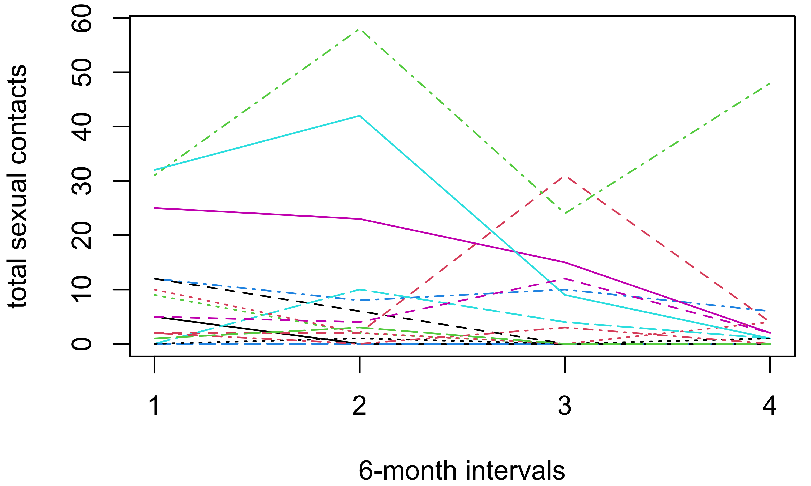

contact_data <- read.table(file="contacts.csv",header=TRUE)
matplot(t(contact_data[1:15,1:4]),
ylab="total sexual contacts",xlab="6-month intervals",
type="l",xaxp=c(1,4,3))Lesson 8: Case study: Sexual contacts panel data
Objectives
Discuss the use of partially observed Markov process (POMP) methods for panel data, also known as longitudinal data.
See how POMP methods can be used to understand the outcomes of a longitudinal behavioral survey on sexual contact rates.
Introduce the
Rpackage panelPomp that extends pomp to panel data.
Panel data
Introduction to panel data
Panel data consist of a collection of time series having no dynamic coupling.
Each time series is called a unit
If each unit contain insufficient information to estimate model parameters, we infer shared parameters by pooling across the whole panel.
We may have unit-specific parameters, taking distinct values for each unit.
The goals of developing, fitting and criticizing mechanistic models for panel data are similar to analysis of a single time series.
Heterogeneity in sexual contact rates
Heterogeneities in sexual contacts
Basic epidemiological models suppose equal contact rates for all individuals in a population.
Sometimes these models are extended to permit rate heterogeneity between individuals.
Rate heterogeneity within individuals, i.e., dynamic behavioral change, has rarely been considered.
There have been some indications that rate heterogeneity plays a substantial role in the HIV epidemic.
Data from a prospective study
E. O. Romero-Severson et al. (2015) investigated whether dynamic variation in sexual contact rates are a real and measurable phenomenon.
They analyzed a large cohort study of HIV-negative gay men in 3 cities (Vittinghoff et al. 1999).
In a simple model for HIV, with a fully mixing population of susceptible and infected individuals, the fitted variation found by E. O. Romero-Severson et al. (2015) can explain the observed prevalence history in the US despite the low per-contact infectivity of HIV.
Here, we consider the longitudinal data from Vittinghoff et al. (1999) on total sexual contacts over four consecutive 6-month periods, for the 882 men having no missing observations.
Plotted is a sample of 15 time series from contacts.csv.

Types of contact rate heterogeneity
We want a model that can describe all sources of variability in the data:
Differences between individuals
Differences within individuals over time
Over-dispersion: variances exceeding that of a Poisson model
A model for dynamic variation in sexual contact rates
We use the model of E. O. Romero-Severson et al. (2015), with each individual making contacts at a latent rate \(X_i(t)\).
Each data point, \(y_{ij}\), is the number of reported contacts for individual \(i\) between time \(t_{j-1}\) and \(t_j\), where \(i=1,\dots,882\) and \(j=1,\dots,4\).
The unobserved process \(\{X_i(t)\}\) is connected to the data through the expected number of contacts for individual \(i\) in reporting interval \(j\), which we write as \[C_{ij}= \alpha^{j-1}\int_{t_{j-1}}^{t_j} X_i(t)\, dt,\] where \(\alpha\) is an additional secular trend that accounts for the observed decline in reported contacts.
Overdispersion relative to Poisson variation
A basic stochastic model for homogeneous count data models \(y_{ij}\) as a Poisson random variable with mean and variance equal to \(C_{ij}\) (Keeling and Rohani 2009).
However, the variance in the data are much higher than the mean of the data (Ethan O. Romero-Severson et al. 2012).
Therefore, we model the data as negative binomial, a generalization of a Poisson distribution that permits variance larger than the mean: \[y_{ij}\sim \mathrm{NegBin}\, \left(C_{ij},D_{i}\right),\] with mean \(C_{ij}\) and variance \(C_{ij}+C_{ij}^2/D_i\).
Here, \(D_i\) is called the dispersion parameter, with the Poisson model being recovered in the limit as \(D_i\) becomes large.
The dispersion, \(D_i\), can model increased variance (compared to Poisson variation) for individual contacts, but cannot explain observed autocorrelation between measurements on an individual over time.
Autocorrelation and individual-level effects
To model autocorrelation, we suppose that individual \(i\) has behavioral episodes within which \(X_i(t)\) is constant, but the individual enters new behavioral episodes at rate \(R_i\). At the start of each episode, \(X_i(t)\) takes a new value drawn from a Gamma distribution with mean \(\mu_X\) and variance \(\sigma_X\), \[X_i(t)\sim \mbox{Gamma}(\mu_X, \sigma_X).\]
To complete the model, we also assume Gamma distributions for \(D_i\) and \(R_i\), \[D_i \sim \mbox{Gamma}(\mu_D, \sigma_D),\] \[R_i \sim \mbox{Gamma}(\mu_R, \sigma_R).\] The parameters, \(\sigma_X\), \(\sigma_D\) and \(\sigma_R\) control individual-level differences in behavioral parameters allowing the model to encompass a wide range of sexual contact patterns.
Parameter interpretation and identifiability
The distinction between the effects of the rate at which new behavioral episodes begin, \(R_i\), and the dispersion parameter, \(D_i\), is subtle since both model within-individual variability.
The signal in the data about distinct behavioral episodes could be overwhelmed by a high variance in number of reported contacts resulting from a low value of \(D_i\).
Whether the data are sufficient to identify both \(R_i\) and \(D_i\) is an empirical question.
Simulation-based investigation of the fitted model
Consequences of dynamic behavior in an SI model for HIV
3 cases where contact rates are either (a) constant; (b) vary only between individuals; (c) vary both between and within individuals.
In each case, parameterize the model by fitting the behavioral model above, and supplying per-contact infection rates from the literature.
This simple model shows a potential role for dynamic variation.
Homogeneous(dashed line): the epidemic was simulated where \(\mu_X\) is estimated by the sample mean (1.53 \(\mathrm{month}^{-1}\)) without any sources of between-individual or within-individual heterogeneity.Between Heterogeneity(dotted line): the epidemic was simulated where \(\mu_X\) is estimated by the sample mean (1.53 \(\mathrm{month}^{-1}\)) and \(\sigma_X\) is estimated by the sample standard deviation (3.28 \(\mathrm{month}^{-1}\))Within+Between Heterogeneity(solid line): the epidemic was simulated where each parameter is set to the estimated maximum likelihood estimate for total contacts.For all situations, the per contact probability of transmission was set to 1/120, the average length of infection was set to 10 years, and the infection-free equilibrium population size was set to 3000. The per contact probability was selected such that the basic reproduction number in the the
Homogeneouscase was 1.53. In theHomogeneous,Between Heterogeneity,Within+Between Heterogeneitycases respectively 239/500 and 172/500, 95/500 simulations died out before the 100 year mark.
PanelPOMP models and the panelPomp package
PanelPOMP models as an extension of POMP models
A PanelPOMP model consists of independent POMP models for a collection of units.
The POMP models are tied together by shared parameters.
Here, the units are individuals in the longitudinal survey.
In general, some parameters may be unit-specific (different for each individual) whereas others are shared (common to all individuals).
Here, we only have shared parameters. The heterogeneities between individuals are modeled as random effects with distribution determined by these shared parameters.
Iterated filtering for POMP models was extended to PanelPOMPs by Bretó, Ionides, and King (2020).
Using the panelPomp R package
The main task of panelPomp beyond pomp is to handle the additional book-keeping necessitated by the unit structure.
PanelPOMP models also motivate methodological developments to deal with large datasets and the high dimensional parameter vectors that can result from unit-specific parameters.
A
panelPompobject for the above contact data and model is provided bycontactsin panelPomp.
library(panelPomp)
contacts <- contacts()- The implementation of the above model equations in
contactscan be found in thepanelPomp source code on github.
- Let’s start by exploring the
contactsobject
class(contacts)[1] "panelPomp"
attr(,"package")
[1] "panelPomp" slotNames(contacts)[1] "unit.objects" "shared" "specific" class(unitobjects(contacts)[[1]])[1] "pomp"
attr(,"package")
[1] "pomp"We see that an object of class
panelPompis a list ofpompobjects together with a parameter specification permitting shared and/or unit-specific parameters.The POMP models comprising the PanelPOMP model do not need to have the same observation times for each unit.
A PanelPOMP with all parameters unit-specific
Suppose a PanelPOMP model has all its parameters unit-specific. Is there anything useful to be gained from the PanelPOMP structure, or is it preferable to analyze the data as a collection of POMP models?
Methods for panelPomps
How would you find the panelPomp package methods available for working with a panelPomp object?
Likelihood-based inference for PanelPOMPs
Likelihood evaluation for PanelPOMPs
PanelPOMP models are closely related to POMPs, and particle filter methods remain applicable.
contactscontains a parameter vector corresponding to the MLE for total contacts reported by E. O. Romero-Severson et al. (2015):
coef(contacts) mu_X sigma_X mu_D sigma_D mu_R sigma_R alpha
1.75 2.67 3.81 4.42 0.04 0.00 0.90 pfilter(contacts,Np=1000)carries out a particle filter computation at this parameter vector.
What happens when we pfilter a panelPomp?
Describe what you think
pfilter(contacts,Np=1000)should do.Hypothesize what might be the class of the resulting object? What slots might this object possess?
Check your hypothesis.
Replicated likelihood evaluations
- As usuual for Monte Carlo calculations, it is useful to replicate the likelihood evaluations, both to reduce Monte Carlo uncertainty and (perhaps more importantly) to quantify it.
plan(multicore,workers=20)
pf1_results <- foreach(
i=1:20,.options.future=list(seed=TRUE)
) %dofuture% {
pf <- pfilter(contacts,Np=2000)
list(
logLik=logLik(pf),
unitLogLik=sapply(unitobjects(pf),logLik)
)
}- This took 0.3 minutes using 20 cores.
Combining likelihood evaluations
Combining Monte Carlo likelihood evaluations for PanelPOMPs
We have a new consideration not found with
pompmodels. Each unit has its own log-likelihood arising from an independent Monte Carlo computation.The basic
pompapproach remains valid:
loglik1 <- sapply(pf1_results,function(x) x$logLik)
logmeanexp(loglik1,se=T) est se
-9553.266898 1.732402 - Can we do better, using the independence of units? It turns out we can (Bretó, Ionides, and King 2020).
logmeanexp versus panel_logmeanexp
pf1_loglik_matrix <- sapply(pf1_results,function(x) x$unitLogLik)
panel_logmeanexp(pf1_loglik_matrix,MARGIN=1,se=T) se
-9554.1728296 0.6482015 The improvement via
panel_logmeanexpis small in this case, since the number of observation times is small.For longer panels, the difference becomes more important.
The difference between panel_logmeanexp and logmeanexp
The basic
pompapproach averages the Monte Carlo likelihood estimates after aggregating the likelihood over units.The
panel_logmeanexpaverages separately for each unit before combining.Why does the latter typically give a higher log-likelihood estimate with lower Monte Carlo uncertainty?
Either reason at a heuristic level or (optionally) develop a mathematical argument.
Writing a PanelPOMP as a POMP
If we can formally write a PanelPOMP as a POMP, we can use methods such as
mif2for inference.We could stack the panel models in different ways to make a large POMP model.
A naive way to do inference for a PanelPOMP model as a POMP is to let an observation for the POMP be a vector of observations for all units in the PanelPOMP at that time. This gives a high-dimensional observation vector which is numerically intractable via particle filters.
Instead, we concatenate the panels into one long time series, with dynamic breaks where the panels are glued together.
Maximizing the likelihood
Likelihood maximization using the PIF algorithm
The panel iterated filtering (PIF) algorithm of Bretó, Ionides, and King (2020) applies the IF2 algorithm to a POMP model constructed by concanenating the collection of panels.
PIF is implemented in panelPomp as the
mif2method for classpanelPomp.Comparing
?panelPomp::mif2with?pomp::mif2reveals that the only difference in the arguments is that theparamsargument forpomp::mif2becomesshared.startandspecific.startforpanelPomp::mif2.As an example of an iterated filtering investigation, let’s carry out a local search, starting at the current estimate of the MLE.
Following E. O. Romero-Severson et al. (2015) we fix \(\sigma_R=0\).
plan(multicore,workers=20)
mif_results <- foreach(
i=1:20,
.options.future=list(seed=TRUE)
) %dofuture% {
mf <- mif2(contacts,
Nmif=50, Np=1000,
cooling.type="geometric", # note difference with pomp
cooling.fraction.50=0.5,
rw.sd=rw_sd(mu_X=0.02, sigma_X=0.02,mu_D = 0.02,
sigma_D=0.02,mu_R=0.02, alpha=0.02)
)
list(logLik=logLik(mf),params=coef(mf))
}This search took 12.8 minutes on 20 cores.
We see that
panelPompiterated filtering is set up similarly to itspompcousin.
Some considerations for likelihood evaluations
Similar likelihood evaluation issues arise for panelPomp as for {pomp}.
The preliminary likelihood estimated as a consequence of running
mif2and extracted here bysapply(m2,logLik)does not correspond to the actual, fixed parameter, model. It is the sequential Monte Carlo estimate of the likelihood from the last filtering iteration, and therefore will have some perturbation of the parameters.One typically requires fewer particles for each filtering iteration than necessary to obtain a good likelihood estimate—stochastic errors can cancel out through the filtering iterations, rather than within any one iteration.
For promising new parameter values, it is desirable to put computational effort into evaluating the likelihood sufficient to make the Monte Carlo error small compared to one log unit.
mif_logLik <- sapply(mif_results,function(x)x$logLik)
mif_mle <- mif_results[[which.max(mif_logLik)]]$params
plan(multicore,workers=10)
pf3_loglik_matrix <- foreach(i=1:10,.combine=rbind,
.options.future=list(seed=TRUE)
) %dofuture% {
unitlogLik(pfilter(contacts,shared=mif_mle,Np=10000))
} panel_logmeanexp(pf3_loglik_matrix,MARGIN=2,se=T) se
-9607.1582324 0.2157907 This took 0.7 minutes on 10 cores.
Here, the local search found a lower likelhood than the published MLE. Longer searches with more cooling, and/or more Monte Carlo replications, may be needed to reliably obtain accurate maximization.
References
References
Bretó, Carles, Edward L. Ionides, and Aaron A. King. 2020. “Panel Data Analysis via Mechanistic Models.” J Am Stat Assoc 115 (531): pre–published online. https://doi.org/10.1080/01621459.2019.1604367.
Keeling, M., and P. Rohani. 2009. Modeling Infectious Diseases in Humans and Animals. Princeton, NJ: Princeton University Press.
Romero-Severson, E. O., E. Volz, J. S. Koopman, T. Leitner, and E. L. Ionides. 2015. “Dynamic Variation in Sexual Contact Rates in a Cohort of HIV-Negative Gay Men.” Am J Epidemiol 182 (3): 255–62. https://doi.org/10.1093/aje/kwv044.
Romero-Severson, Ethan O., Shah Jamal Alam, Erik M. Volz, and James S. Koopman. 2012. “Heterogeneity in Number and Type of Sexual Contacts in a Gay Urban Cohort.” Stat Commun Infect Dis 4 (1). https://doi.org/10.1515/1948-4690.1042.
Vittinghoff, Eric, John Douglas, Frank Judon, David McKiman, Kate MacQueen, and Susan P. Buchinder. 1999. “Per-Contact Risk of Human Immunodificiency Virus Tramnsmision Between Male Sexual Partners.” Am J Epidemiol 150 (3): 306–11.
License, acknowledgments, and links
This lesson is prepared for the Simulation-based Inference for Epidemiological Dynamics module at the Summer Institute in Statistics and Modeling in Infectious Diseases, SISMID.
The materials build on previous versions of this course and related courses.
Licensed under the Creative Commons Attribution-NonCommercial license. Please share and remix non-commercially, mentioning its origin.
Produced with R version 4.4.0, pomp version 5.9, and panelPomp version 1.1.0.1.
Compiled on 2024-06-18.